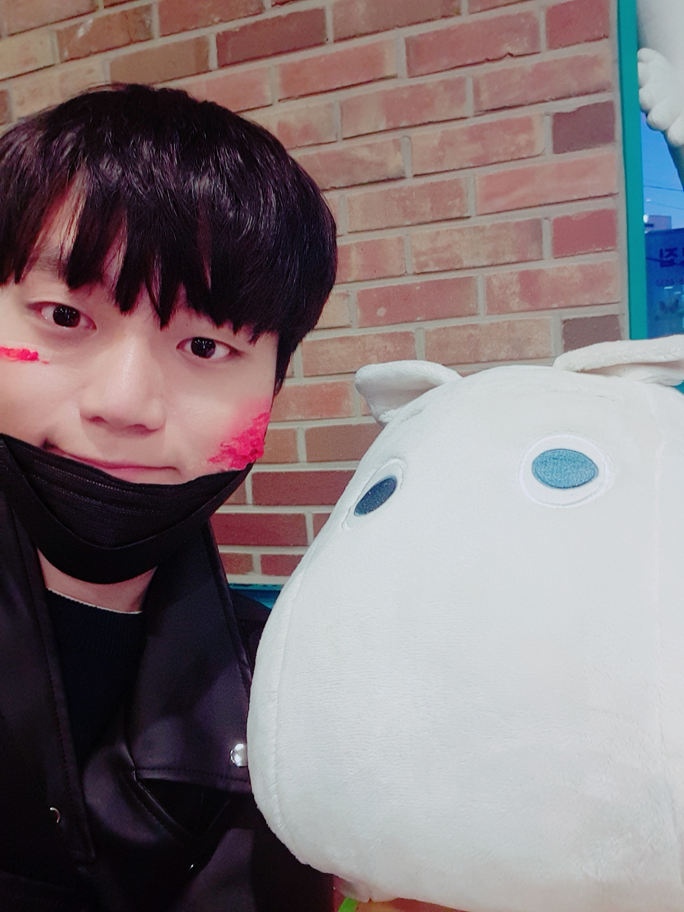

자기 소개

이름 : 강선호
한국교통대학교에 재학중이며, 현재는 3학년 입니다.
멋사단7기에 들어오게된 동기는 학교를 휴학하면서, 부족했던 웹관련 기술들을 학원을 통해 배웠었고, 이에 부족함을 느껴 학교에 복학하면서 웹서비스를 만들기 위해
배우고 활동하기 위해 가입했습니다.
만들고 싶은 서비스
아버지가 인쇄업을 하시는데, 일을 가져오거나 의뢰를 하실 때, 일리리 사람과 만나야 하는 불편함이 있었습니다.
하여, 제가 만들고 싶은 서비스는 계약자나 일거리를 받을때, 웹을 통해 편하게 주고 받기 편하게 하고자 하며
사업자로 인쇄업 관련 사이트를 만들어 아버지 사업에 도움이 되고자 합니다.